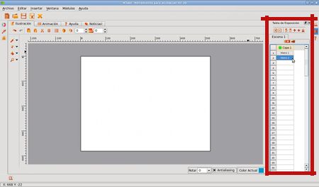
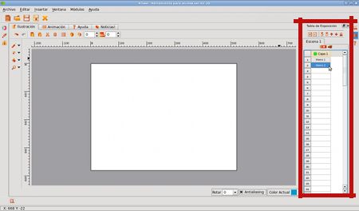
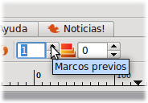
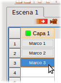
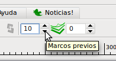
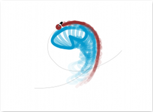

|  |  |
Fig #48. Adding a new framework
Added new frames
With our first frame finished, it's time to
add the following. To do this, we will use the Exposure
Table, located right in our workspace.
With the mouse, let's press on the # 2 position of the layer # 1,
as shown in the image:
|  | |
Fig #48. Adding a new framework
Each time we need a new framework to work, perform the same procedure. It's time to add to our butterfly in a new position, but first it's time to turn on onion skinning framework back:
 |
 |
Fig #49. Activating Onion
With this resource, we can use the previous frame as a guide to where we place objects or characters are animated. Notice that before activating the onionskin paper, frame # 2 was completely white? Well, now looks like paper Transparent

Fig #50. First frame reflected in the second, thanks to the Onion
Based on information from the first frame, redraw the butterfly, this time a little later:

Fig #51. Drawing the butterfly in the second frame
Okay, now add a third frame, but to give us a better idea of how to go about drawing your character as the animation progresses, we will also enable more visibility of frames back (10 for this example) in our box Paper control Onion:
|  |  |
Fig #52. Adding a more and 10 onion layers back
Tip: Remember that you can activate the transparency of both frames forward or backward. Feel free to use as many as you like, it is important to take advantage of this functionality to make your animations look as smooth as possible.
Now we continue with our third frame, exactly the same steps we took earlier:

Fig #53. Drawing the butterfly in frame # 3
At this point, chances are you're wondering: How many frames will need my animation? Well, it's a very good question to learn how to answer it yourself, with time and lots and lots of practice. Only with experience will learn to calculate an approximate value of frameworks for each of your projects. For now, we will draw as many as needed to meet proposed by our script:

Fig #54. Drawing the butterfly in frame # 6

Fig #55. Drawing the butterfly in frame # 9
 |
 |
 |
 |
Fig #56. Screenshots of the frames 21, 31, 45 and 56
Tip: For this small project was necessary to draw 73 frames.
One important thing to note is that you should not expect to draw the last frame in order to visualize how your animation is running. In fact, it is good practice to review the results every few frames, so as to ensure that the illustrations are shaping every second, really correspond to what you have in mind. Let's take a look!